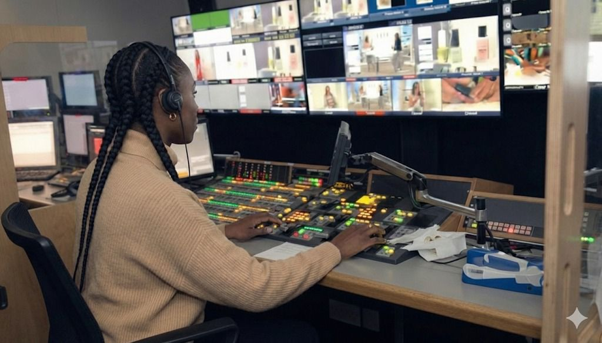
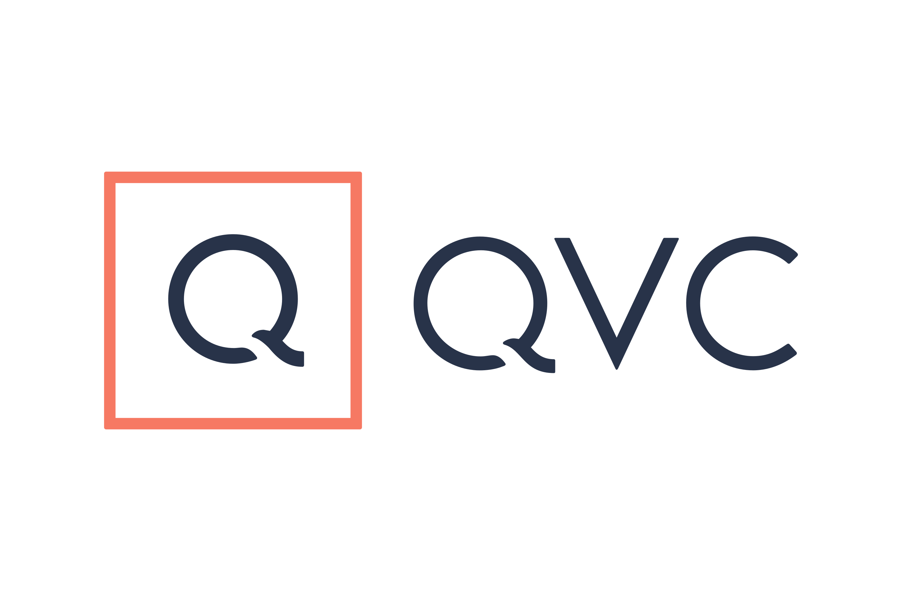
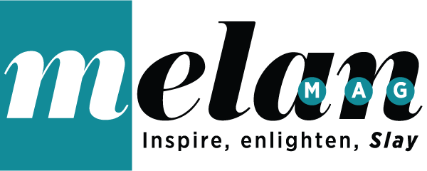

I am a senior live broadcast director whose career has been built in the UK, including over 17 years at QVC. I worked at the centre of fast-paced, multi-camera productions across fashion, beauty, lifestyle, and panel programming — operating in high-pressure live environments where clarity, timing, and precision were essential. During that time, I also worked with London Live and the London Stock Exchange, bringing broadcast discipline and strong narrative control into both media and corporate settings.
What I Do
- Live studio directing
- Vision mixing
- Broadcast operations leadership
- On-air narrative shaping
- Commercial storytelling integration
I turn business goals and creative ideas into clear, engaging live programming — content that connects with audiences while protecting brand reputation. I'm known for staying calm under pressure and leading presenters, producers, executives, and technical teams with clarity and focus. Live television is unforgiving — there's no edit button. That mindset shapes how I approach communication: be prepared, be precise, and be intentional.
Public Speaking & Media Training
Alongside directing, I work as a public speaker and media trainer. After nearly two decades coaching presenters, CEOs, founders, and spokespeople from the control room, I know what builds real confidence and credibility on camera. Today, I work directly with individuals and organisations to strengthen how they communicate — whether preparing for interviews, panel discussions, keynote speeches, or high-profile announcements. I help clients show up composed, clear, and in control of their message.
My media training and coaching focuses on:
- Structuring clear, memorable messages
- Building confident on-camera presence
- Managing nerves in high-pressure situations
- Handling interviews with authority
- Aligning communication with brand values
I don't just teach people how to speak — I teach them how to land their message with impact.
Associate Editor, Melan Magazine
Melan Magazine (melanmag.com) is a digital lifestyle platform created for smart, stylish Black women. It covers fashion, beauty, career, travel, health, and lifestyle — always through a lens that centres Black identity, culture, and achievement.
As Associate Editor, I work closely with the Editor-in-chief and help shape the magazine's voice and editorial direction. I contribute to content strategy and storytelling, ensuring our work is culturally aware, commercially relevant, and aligned with our audience. My focus includes:
- Authentic and inclusive representation
- Audience growth and engagement
- Brand-aligned storytelling
- Clear cultural positioning
- Long-term credibility over short-term trends
Across broadcast, public speaking, and editorial, my work is rooted in one principle: shaping narratives with clarity, responsibility, and impact.
Please browse and join the community at melanmag.com
Broadcast experience includes

